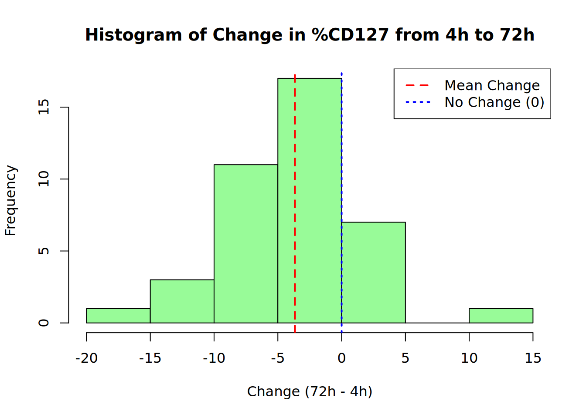
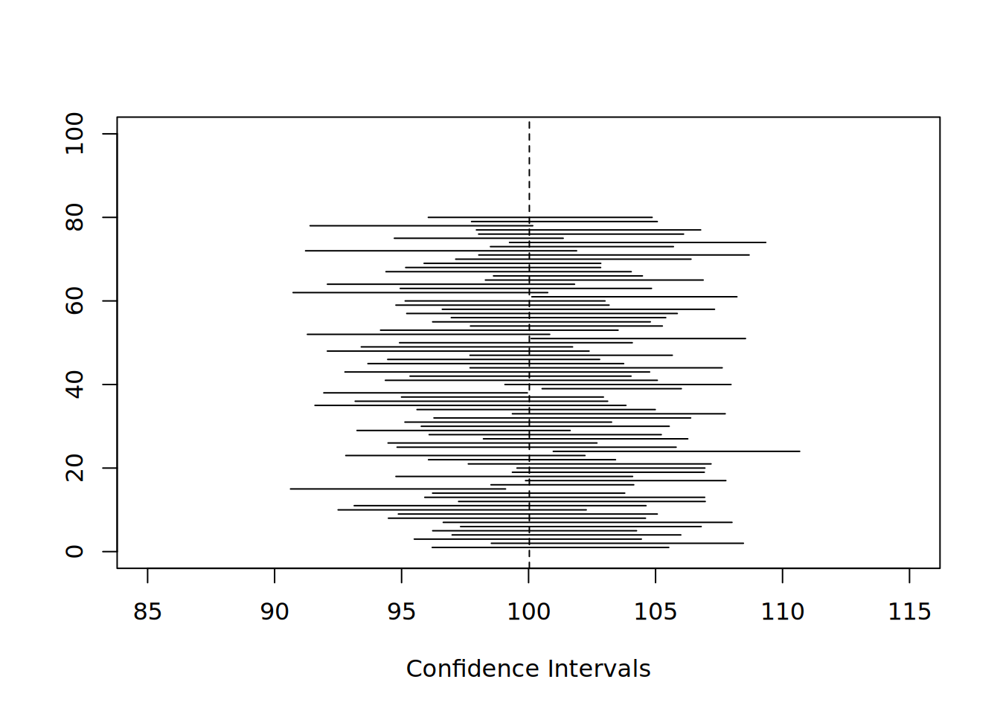

# Load blood_CD8.csv
blood_CD8 <- read.csv("blood_CD8.csv", stringsAsFactors = FALSE)Homework 5 - Biostatistics
Dylan Renard
Professor Proschan & Professor Nason
JHU Biostatistics
June 22nd, 2025
Homework 5
In this assignment, we will analyze longitudinal measurements of CD127 expression on CD8 cells from 40 donors to assess whether storage time affects sample quality. Using the blood_CD8.csv dataset, we will apply t-tests and confidence intervals to evaluate changes in mean expression across time points, with particular focus on 4-hour levels and the changes from 4 to 72 hours.
Part 1: Coding Questions
1) Using the function t.test(), Construct a 95% confidence interval for the mean %CD127 at 4 hours. Describe the set of plausible values for the true mean.
# Extract 4-hour CD127 values
cd127_4h <- blood_CD8$`X4`
# Construct a 95% confidence interval for the mean
t.test(cd127_4h, conf.level = 0.95)
One Sample t-test
data: cd127_4h
t = 17.804, df = 39, p-value < 2.2e-16
alternative hypothesis: true mean is not equal to 0
95 percent confidence interval:
40.18517 50.48631
sample estimates:
mean of x
45.33574 The 95% confidence interval for the true mean %CD127 expression at 4 hours is approximately (40.19%, 50.49%). This means we are 95% confident that the true average expression lies within this range, making it a plausible set of values based on the observed data.
2) Test the hypothesis that the true mean %CD127 is 40 in this population. What is the p-value? Write a one-sentence conclusion from the test, based on a two-sided alpha of .05.
# Run a two-sided t-test on the 4-hour timepoint
t_test_result <- t.test(blood_CD8$X4, mu = 40)
# View the test result
print(t_test_result)
One Sample t-test
data: blood_CD8$X4
t = 2.0954, df = 39, p-value = 0.04268
alternative hypothesis: true mean is not equal to 40
95 percent confidence interval:
40.18517 50.48631
sample estimates:
mean of x
45.33574 The P-value is approxmiately 0.0427 representing the probability of observing a sample mean as extreme as 45.34, assuming the true population mean is 40. Since the p-value is less than 0.05, we reject the null hypothesis and conclude that the true mean %CD127 at 4 hours is significantly different from 40.
3) Looking back at your answer to part (a), how could you have answered (b) without doing another test?
One could have answered question 2 by checking whether the null value of 40 lies within the 95% confindence interval calculated in question 1. Since the 95% confidence interval from Q1 excluded 40, one could conclude that the true mean is significantly different from 40 without performing a separate hypothesis test.
4) Make a histogram of the change variable, and get the 95% CI for mu. “No change” would be equivalent to a mean change of 0. Does the Confidence interval include 0? What can you say about change from 4 hours from this confidence interval?
# Create the change variable
blood_CD8$change_72_4 <- blood_CD8$X72 - blood_CD8$X4
# Plot the histogram
hist(blood_CD8$change_72_4,
main = "Histogram of Change in %CD127 from 4h to 72h",
xlab = "Change (72h - 4h)",
col = "palegreen",
border = "black")
abline(v = mean(blood_CD8$change_72_4), col = "red", lty = 2, lwd = 2)
abline(v = 0, col = "blue", lty = 3, lwd = 2)
# Add legend
legend("topright",
legend = c("Mean Change", "No Change (0)"),
col = c("red", "blue"),
lty = c(2, 3),
lwd = 2)
# Calculate 95% confidence interval
t.test(blood_CD8$change_72_4)$conf.int[1] -5.440393 -1.877406
attr(,"conf.level")
[1] 0.95No the 95% confidence interval for the mean change from 4 to 72 hours is [-5.44, -1.88], which does not include 0. This suggests that the average %CD127 expression significantly decreased over time, and the observed decline is unlikely to be due to random variation alone.
5) Do a t-test as to whether the mean change at 72 hours is significantly different than 0. What is the p-value? Write a one-sentence conclusion from the test, based on a two-sided alpha of .05.
# Perform a two-sided t-test on the change variable
t_test_change <- t.test(blood_CD8$change_72_4, mu = 0)
# View the test result
print(t_test_change)
One Sample t-test
data: blood_CD8$change_72_4
t = -4.1543, df = 39, p-value = 0.0001722
alternative hypothesis: true mean is not equal to 0
95 percent confidence interval:
-5.440393 -1.877406
sample estimates:
mean of x
-3.6589 The p-value is roughly 0.00017, indicating extremely strong evidence against the null hypothesis. In conclusion, since the p-value is less than 0.05, we reject the null hypothesis and conclude that the mean change in %CD127 from 4 to 72hrs is significantly different from 0.
6) Looking back at your answer to part (d), how could you have answered (e) without doing a test?
We could have answered Q5 by checking whether the 95% confidence interval for the mean change [-5.44, -1.88] includes 0. Since 0 is not within this interval, you can conclude that the change is statistically sigificant without conducting a separate t-test.
Part 2: Textbook problems from Chapter 10
10.3) What is a p-value? What does the p-value mean in words?
A p-value is the probaility of obtaining a test statistic as extreme (or more extreme than) the one observed, assuming that the null hypothesis is true. In other words, the p-value can tell us how likely it is to see our data (or something more extreme) just by random chance if there were really no effect. A small p-value suggests that such an outcome would be rare under the null hypothesis, providing evidence against it.
10.4) Briefly explain the relationship between confidence intervals and hypothesis testing.
Confidence intervals and hypothesis testing are closely related because they both assess the same underlying question: what values of a parameter are consistent with the data? A two-sided hypthesis test at significance level alpha corresponds directly to a (1-alpha)x100% confidence interval.
- If the null value like a mean of zero is inside the confidence interval, we fail to rehect the null hypothesis.
- If the null value is outside the interval, we reject the null hypothesis.
Thus, a confidence interval not only tells us whether an effect is statistically significant, but also provides a range of plausible values for the true population parameter.
10.9) The distribution of diastolic blood pressures for the population of female diabetics between the ages of 30 and 34 has an unknown mean μd and a standard deviation σd = 9.1 mm Hg. It may be useful to physicians to know whether the mean of this population is equal to the mean of the general population of females in this age group, 74.4 mm Hg.
a) What is the null hypothesis of the appropriate test?
The mean diastolic blood pressure of female diabetics aged 30-34 is equal to that of the general population (H0: mu = 74.4 mm Hg)
b) What is the alternative hypothesis?
The mean diastolic blood pressure of female diabetic aged 30-34 is not equal to that of the general population. (HA: mu != 74.4 mm Hg)
c) A sample of 10 diabetic women is selected; their mean diastolic blood pressure is x-bard= 84 mm Hg. Using this information, conduct a two-sided test at the α = 0.05 level of significance. What is the p-value of the test?
c) Hypothesis Test Calculation
We are testing:
- Null Hypothesis (H₀): μ = 74.4 mm Hg
- Alternative Hypothesis (Hₐ): μ ≠ 74.4 mm Hg
- Significance Level (α): 0.05
From the problem: - Sample size: n = 10
- Sample mean: \(\bar{x}\) = 84 mm Hg
- Population standard deviation (assumed): σ = 9.1 mm Hg
We calculate the standard error:
\[ SE = \frac{\sigma}{\sqrt{n}} = \frac{9.1}{\sqrt{10}} \approx 2.88 \]
The t-statistic is:
\[ t = \frac{\bar{x} - \mu_0}{SE} = \frac{84 - 74.4}{2.88} \approx 3.34 \]
With degrees of freedom (df) = 9, the two-sided p-value is:
\[ p = 2 \times P(T > 3.34) \approx 0.0087 \]
# R-code to check work
# Given values
x_bar <- 84 # Sample mean
mu_0 <- 74.4 # Population mean
s <- 9.1 # Population standard deviation (used as sample SD here)
n <- 10 # Sample size
# Standard error
se <- s / sqrt(n)
# t-statistic
t_stat <- (x_bar - mu_0) / se
# Degrees of freedom
df <- n - 1
# Two-sided p-value
p_value <- 2 * (1 - pt(abs(t_stat), df))
# Output results
cat("t =", t_stat, "\n")t = 3.336029 cat("p-value =", p_value, "\n")p-value = 0.008715056 d) What conclusion do you draw from the results of the test?
Since the p-value (0.0087) is less than the significance level of alpha = 0.05, we reject the null hypothesis. This provides statistically significant evidence that the mean diastolic blood pressure in diabetic women aged 30-34 is different from that of the general population (74.4 mm Hg).
e) Would your conclusion have been different if you had chosen α = 0.01 instead of α = 0.05?
No the conclusion would not be diferent. Since the p-value (0.0087) is still significantly lest than 0.01, we would still reject the null hypothesis. The result remains statistically significant even at the more stringent 0.01 level.
10.10) E. canis infection is a tick-borne disease of dogs that is sometimes contracted by humans. Among infected humans, the distribution of white blood cell counts has an unknown mean μ and a standard deviation σ. In the general population, the mean white blood cell count is 7250/mm3. It is believed that persons infected with E. canis must on average have lower white blood cell counts.
a) What are the null and alternative hypotheses for a one-sided test?
The null hypothesis would be H0: mu = 7250/mm^3 whereas the alternative hypothesis HA: mu < 7250/mm^3. This is a one sided (left-tailed) test because we are testing whether infected individuals have lower white blood cell counts than the general population.
b) For a sample of 15 infected persons, the mean white blood cell count is Xbar =4767 /mm3 and the standard deviation s~ 3204/mm3. Conduct the test at the α=0.05 level.
We are testing whether E. canis-infected individuals have lower average white blood cell counts than the general population.
- Null Hypothesis (H₀): μ = 7250/mm³
- Alternative Hypothesis (Hₐ): μ < 7250/mm³
- Significance Level (α): 0.05
From the problem: - Sample size: n = 15
- Sample mean: \(\bar{x}\) = 4767/mm³
- Sample standard deviation: s = 3204/mm³
Step 1: Calculate the standard error
\[ SE = \frac{s}{\sqrt{n}} = \frac{3204}{\sqrt{15}} \approx 827 \]
Step 2: Compute the t-statistic
\[ t = \frac{\bar{x} - \mu_0}{SE} = \frac{4767 - 7250}{827} \approx -3.00 \]
Step 3: Find the one-sided p-value
Using a t-distribution with 14 degrees of freedom:
\[ p = P(T_{14} \leq -3.00) \approx 0.0049 \]
# R-code to check work
# Given values
x_bar <- 4767 # Sample mean
mu_0 <- 7250 # Population mean
s <- 3204 # Sample standard deviation
n <- 15 # Sample size
# Standard error
se <- s / sqrt(n)
# t-statistic
t_stat <- (x_bar - mu_0) / se
# Degrees of freedom
df <- n - 1
# One-sided p-value (left-tailed test)
p_value <- pt(t_stat, df)
# Output results
cat("t =", t_stat, "\n")t = -3.001441 cat("p-value =", p_value, "\n")p-value = 0.004762133 c) What do you conclude?
Since the p-value (~0.0049) is less than the significance level alpha = 0.05, we reject the null hypothesis. There is statistically significant evidence that individuals infected with E.cains have lower white blood cell counts than the general population.
10.11) Body mass index is calculated by dividing a person’s weight by the square of his or her height; it is a measure of the extent to which the individual is overweight. For the population of middle-aged men who later develop diabetes mellitus, the distribution of baseline body mass indices is approximately normal with an unknown mean μ and standard deviation σ. A sample of 58 men selected from this group has mean Xbar= 25.0 kg/m2 and standard deviations~ 2.7 kg/m2.
a) Construct a 95% confidence interval for the population mean μ.
We are given: - Sample size: n = 58
- Sample mean: \(\bar{x}\) = 25.0 kg/m²
- Sample standard deviation: s = 2.7 kg/m²
- Degrees of freedom: df = 58 − 1 = 57
Step 1: Compute the standard error (SE):
\[ SE = \frac{s}{\sqrt{n}} = \frac{2.7}{\sqrt{58}} \approx 0.3545 \]
Step 2: Find the critical t-value for a 95% confidence level with 57 degrees of freedom:
\[ t^* = t_{0.975, 57} \approx 2.002 \]
Step 3: Calculate the margin of error (ME):
\[ ME = t^* \cdot SE \approx 2.002 \times 0.3545 \approx 0.7099 \]
Step 4: Construct the confidence interval:
\[ \text{CI} = \bar{x} \pm ME = 25.0 \pm 0.71 = [24.29,\ 25.71] \text{ kg/m}^2 \]
# Given values
x_bar <- 25.0 # Sample mean
s <- 2.7 # Sample standard deviation
n <- 58 # Sample size
# Standard error
se <- s / sqrt(n)
# Degrees of freedom
df <- n - 1
# 95% Confidence Interval
t_crit <- qt(0.975, df)
ci_lower <- x_bar - t_crit * se
ci_upper <- x_bar + t_crit * se
# Output the confidence interval
cat("95% Confidence Interval: [", round(ci_lower, 2), ",", round(ci_upper, 2), "]\n")95% Confidence Interval: [ 24.29 , 25.71 ]b) At the 0.05 level of significance, test whether the mean baseline body mass index for the population of middle-aged men who do develop diabetes is equal to 24.0 kg/m2, the mean for the population of men who do not. What is the p-value of the test?
We are testing whether the mean baseline BMI of middle-aged men who develop diabetes differs from that of those who do not.
- Null Hypothesis (H₀): μ = 24.0 kg/m²
- Alternative Hypothesis (Hₐ): μ ≠ 24.0 kg/m²
- Significance Level (α): 0.05
Given: - Sample mean: \(\bar{x} = 25.0\)
- Hypothesized mean: \(\mu_0 = 24.0\)
- Standard deviation: \(s = 2.7\)
- Sample size: \(n = 58\)
- Degrees of freedom: \(df = 57\)
Step 1: Compute the standard error (SE):
\[ SE = \frac{s}{\sqrt{n}} = \frac{2.7}{\sqrt{58}} \approx 0.3545 \]
Step 2: Calculate the t-statistic:
\[ t = \frac{\bar{x} - \mu_0}{SE} = \frac{25.0 - 24.0}{0.3545} \approx 2.82 \]
Step 3: Compute the two-sided p-value:
Using a t-distribution with 57 degrees of freedom:
\[ p = 2 \times P(T_{57} > 2.82) \approx 0.0066 \]
# R-code to test work
# Given values
x_bar <- 25.0 # Sample mean
mu_0 <- 24.0 # Hypothesized mean
s <- 2.7 # Sample standard deviation
n <- 58 # Sample size
# Standard error
se <- s / sqrt(n)
# t-statistic
t_stat <- (x_bar - mu_0) / se
# Degrees of freedom
df <- n - 1
# Two-sided p-value
p_value <- 2 * (1 - pt(abs(t_stat), df))
# Output results
cat("t =", round(t_stat, 3), "\n")t = 2.821 cat("p-value =", round(p_value, 4), "\n")p-value = 0.0066 c) What do you conclude?
Since the p-value(0.0066) is less than the significance level alpha = 0.05, we reject the null hypothesis. This indicates that the mean baseline BMI of middle-aged men who develop diabetes is significantly different from the mean BMI of those who do not (24.0 kg/m^2).
d) Based on the 95% confidence interval, would you have expected to reject or not to reject the null hypothesis? Why?
We would have expected to reject the nully hypothesis based on the 95% confidence interbal. This is becaouse the 95% confidence interval was [24.29, 25.71], which does not include the hypothesized value of 24.0. Since the null value lies outside this interval, it suggests that the true mean is significantly different from 24.0 (consistent with rejecting the null hypothesis in the two sided test).
Additional Thought Question
You should get a result , and a plot. Can you explain what your result means, what this plot represents, and why it is relevant? (Note, it may be helpful to run it more than once)
nreps <- 80
population <- rnorm(n=10000, mean=100, sd=10)
true.mean <- mean(population)
in.CI <- rep(NA, nreps)
plot(true.mean,0,type="n", xlim=c(85, 115), ylim=c(0,100),xlab="Confidence Intervals", ylab="")
abline(v=true.mean, lty=2)
for (i in 1:nreps) {
x <- sample(population, 20)
temp.CI <- t.test(x)$conf.int
segments(temp.CI[1], i, temp.CI[2],i)
in.CI[i] <- true.mean>temp.CI[1] & true.mean<temp.CI[2]
}
mean( in.CI )[1] 0.925Sidenote: The above code was modified to 80 random samples to provide a better visual in the quarto document.
What does the code do:
- It draws 80 random samples (each of size 20) from a normal population with known mean of 100 and standard deviation of 10.
- For each sample, it calculates a 95% confidence interval for the mean using a t-test.
- It then plots each CI as a horizontal line and marks whether the true population mean falls within it.
- The proportion of intervals that contain the true mean is stored in mean(in.CI).
What the Plot Shows:
- Each horizontal line represents a 95% CI from one sample.
- The vertical dashed line shows the true population mean.
- Most segments intersect this line, but a few might miss it.
What the Result tells us:
- mean(in.CI) returns the proportion of confidence intervals that captured the true mean.
- For 95% CIs, we expect about 95% of the intervals to contain the true mean.
- If the result is ~0.95 (0.94 or 0.96), it confirms that the confidence interval behaves as expected.
Why does it matter:
- It visually reinforces the idea that a 95% confidence itnerval doesn’t guarantee the true mean is inside (it means that over many samples, about 95% of such intervals contain the true value).
- It helps differentiate confidence in the procedure, not in a single interval.
Sources:
Danaher, P., McGuire, D., Wu, L. et al. InSituCor: exploring spatially correlated genes conditional on the cell type landscape. Genome Biol 26, 105 (2025). https://doi.org/10.1186/s13059-025-03554-1
Pagano, M., & Gauvreau, K. (2018). Principles of biostatistics / Marcello Pagano, Kimberlee Gauvreau. Duxbury Press.